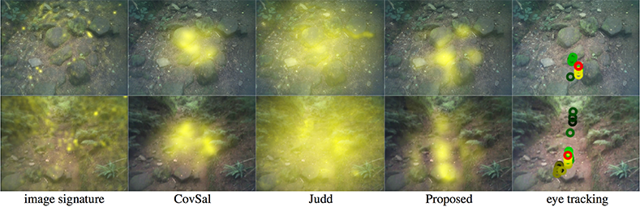

Nantheera Anantrasirichai
Vision provides us information that can be used for adaptively controlling our locomotion. However, we still do not fully understand how humans perceive and use it in a dynamic environment. This implies that information from visual sensors, e.g. cameras, has not yet been fully employed in autonomous systems. This project will study human eye movement during locomotion using a mobile eye tracker, leading to a better understanding of human perception and what low-level features drive decisions, particularly in complex visual task. Recent research suggested that reflexive (intense stimuli) and controlled (voluntary) processes converge on a common neural architecture. Therefore, we are developing bottom-up and top-down approaches together, i.e. saliency for locomotion will be modelled associated to the task difficulty.
We proposed a novel method of salience and priority estimation for the human visual system during locomotion. This visual information contains dynamic content derived from a moving viewpoint. The priority map, ranking key areas on the image, is created from probabilities of gaze fixations, merged from bottom-up features and top-down control on the locomotion. Two deep convolutional neural networks (CNNs), inspired by models of the primate visual system, are employed to capture local salience features and compute probabilities. The first network operates through the foveal and peripheral areas around the eye positions. The second network obtains the importance of fixated points that have long durations or multiple visits, of which such areas need more times to process or to recheck to ensure smooth locomotion. The results show that our proposed method outperforms the state-of-the-art by up to 30%, computed from average of four well known metrics for saliency estimation.

We proposed a novel method of fixation identification for mobile eye trackers. The most significant benefit of our method over the state-of-the-art is that it achieves high accuracy for low-sample-rate devices worn during locomotion. This in turn delivers higher quality datasets for further use in human behaviour research, robotics and the development of guidance aids for the visually impaired. The proposed method employs temporal characteristics of the eye positions combined with statistical visual features extracted using a deep convolutional neural network through the fovea and peripheral areas around the eye positions. The results show that the proposed method outperforms existing methods by up to 16 % in terms of classification accuracy.